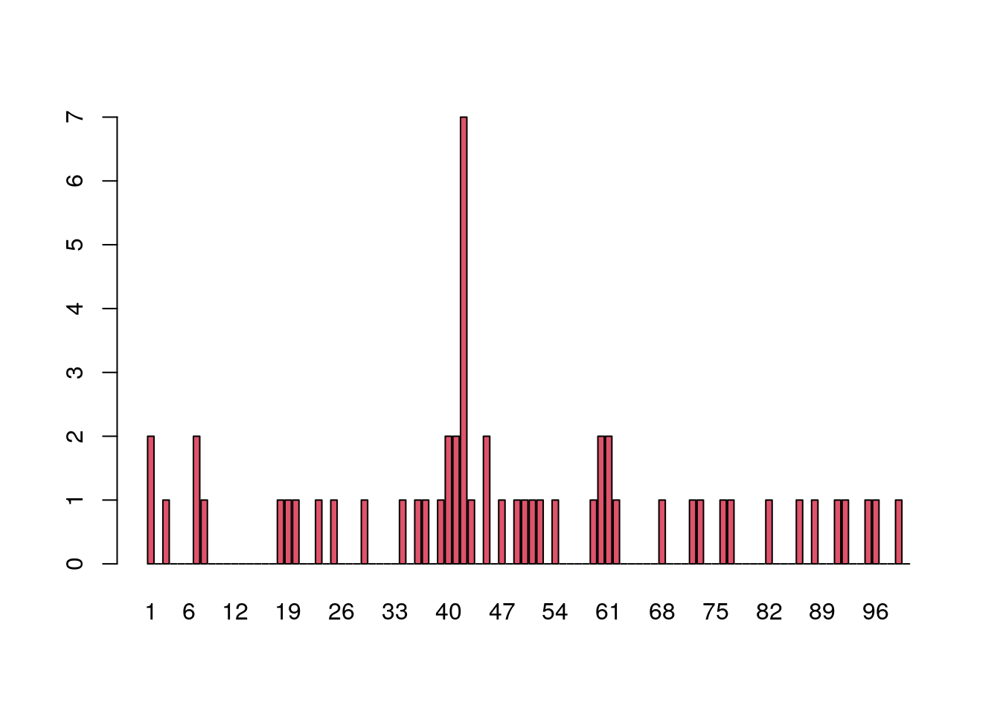

Last updated: 2024-08-07
Checks: 7 0
Knit directory: muse/
This reproducible R Markdown analysis was created with workflowr (version 1.7.1). The Checks tab describes the reproducibility checks that were applied when the results were created. The Past versions tab lists the development history.
Great! Since the R Markdown file has been committed to the Git repository, you know the exact version of the code that produced these results.
Great job! The global environment was empty. Objects defined in the global environment can affect the analysis in your R Markdown file in unknown ways. For reproduciblity it’s best to always run the code in an empty environment.
The command set.seed(20200712) was run prior to running
the code in the R Markdown file. Setting a seed ensures that any results
that rely on randomness, e.g. subsampling or permutations, are
reproducible.
Great job! Recording the operating system, R version, and package versions is critical for reproducibility.
Nice! There were no cached chunks for this analysis, so you can be confident that you successfully produced the results during this run.
Great job! Using relative paths to the files within your workflowr project makes it easier to run your code on other machines.
Great! You are using Git for version control. Tracking code development and connecting the code version to the results is critical for reproducibility.
The results in this page were generated with repository version 66b5825. See the Past versions tab to see a history of the changes made to the R Markdown and HTML files.
Note that you need to be careful to ensure that all relevant files for
the analysis have been committed to Git prior to generating the results
(you can use wflow_publish or
wflow_git_commit). workflowr only checks the R Markdown
file, but you know if there are other scripts or data files that it
depends on. Below is the status of the Git repository when the results
were generated:
Ignored files:
Ignored: .Rhistory
Ignored: .Rproj.user/
Ignored: analysis/figure/
Ignored: r_packages_4.3.3/
Ignored: r_packages_4.4.0/
Untracked files:
Untracked: data/e100.RData
Note that any generated files, e.g. HTML, png, CSS, etc., are not included in this status report because it is ok for generated content to have uncommitted changes.
These are the previous versions of the repository in which changes were
made to the R Markdown (analysis/generative_models.Rmd) and
HTML (docs/generative_models.html) files. If you’ve
configured a remote Git repository (see ?wflow_git_remote),
click on the hyperlinks in the table below to view the files as they
were in that past version.
| File | Version | Author | Date | Message |
|---|---|---|---|---|
| Rmd | 66b5825 | Dave Tang | 2024-08-07 | Epitope detection |
| html | 738aa36 | Dave Tang | 2024-08-07 | Build site. |
| Rmd | 5cd8810 | Dave Tang | 2024-08-07 | Binomial success counts |
| html | 4ec2479 | Dave Tang | 2024-08-07 | Build site. |
| Rmd | 7f9058a | Dave Tang | 2024-08-07 | Generative models |
If we know the rules (parameters) of a mechanism, then even if the outcomes are random, we can generate probabilities of any event by using computations and standard probability laws.
Consider that mutations along the genome of Human Immunodeficiency Virus (HIV) occur at random with a rate of \(5 \times 10^{-4}\) per nucleotide per replication cycle. This means that after one cycle, the number of mutations in a genome of about \(10^4\) = 10,000 nucleotides will follow a Poisson distribution with rate 5.
This probability model predicts that the number of mutations over one replication cycle will be close to 5 and that the variability of this estimate is \(\sqrt{5}\) (the standard error). We now have baseline reference values for both the number of mutations we expect to see in a typical HIV strain and its variability.
If we want to know how often 3 mutations could occur under the
Poisson(5) model, we can use the dpois() function to
generate the probability of seeing x = 3 events, taking the value of the
rate parameter of the Poisson distribution, called lambda
(\(\lambda\)), to be 5.
dpois(x = 3, lambda = 5)[1] 0.1403739The output above says that the chance of seeing exactly three events is around 0.14 or about 1 in 7.
Probabilities of a range of values.
dpois(x = 0:12, lambda = 5) |>
barplot(names.arg = 0:12, col = 2)
| Version | Author | Date |
|---|---|---|
| 4ec2479 | Dave Tang | 2024-08-07 |
Mathematical theory tells us that the Poisson probability of seeing \(x\) is given by:
\[ p = \frac{e^{-\lambda} \lambda^x}{x!} \]
my_dpois <- function(x, lambda){
e <- exp(1)
((e^-lambda)*(lambda^x))/factorial(x)
}
my_dpois(3, 5)[1] 0.1403739dpois(3, 5)[1] 0.1403739The Poisson distribution is a good model for rare events such as mutations. Other useful probability models for discrete events are the Bernoulli, binomial, and multinomial distributions.
A point mutation can either occur or not; it is a binary event. The
two possible outcomes (yes, no) are called the levels
of the categorical variable. However, not all events are binary such as
the genotypes in a diploid organism, which can take three levels:
AA, Aa, and aa.
Sometimes the number of levels in a categorical variable is very large; examples include the number of different types of bacteria in a biological sample (hundreds or thousands) and the number of codons formed of three nucleotides (64 levels).
Tossing a coin has two possible outcomes and this simple experiment is called a Bernoulli trial; this is modeled using a so-called Bernoulli random variable. Bernoulli trials can be used to build more complex models.
We can use the rbinom() function (r for
random and binom for binomial) to generate some random
events that follow a binomial distribution. Below we simulate a sequence
of 15 fair coin tosses. For rbinom() we have specified 15
trials (n = 15), where each individual trial consists of
just one single toss (size = 1), and the probability of
success is 50/50 (prob = 0.5).
set.seed(1984)
rbinom(n = 15, size = 1, prob = 0.5) [1] 1 0 0 0 1 1 0 0 1 0 1 0 1 1 0Success and failure can have unequal probabilities in a Bernoulli
trial, as long as the probabilities sum to one, i.e., complementary
events. To simulate 12 trials with unequal probabilities, we just use a
different prob. The 1’s indicate success and
0’s failure.
set.seed(1984)
rbinom(n = 12, size = 1, prob = 2/3) [1] 1 1 1 1 0 0 1 1 0 1 0 1If we only care about successes, then the order doesn’t matter and we
can just sum the 1’s. We can get just the successes by
setting n = 1 and size to the number of
trials. The number of successes below is close to the specified
probability.
set.seed(1984)
rbinom(n = 1, size = 100, prob = 2/3)[1] 62When there are only two possible outcomes, such as heads or tails, we only need to specify the probability, \(p\), of “success” since the probability of “failure” is \(1 - p\).
The number of successes in 15 Bernoulli trials with a probability of success of 0.3 is called a binomial random variable or a random variable that follows the \(B\)(15,0.3) distribution. If we replicate trial 100 times, we will see that the most frequent value is 4.
set.seed(1984)
replicate(
n = 100,
rbinom(n = 1, prob = 0.3, size = 15)
) |>
table()
0 1 2 3 4 5 6 7 8 9
1 4 6 16 22 19 17 10 3 2 The complete probability mass distribution is
outputted using the dbinom() function:
dbinom(0:15, prob = 0.3, size = 15) |>
barplot(names.arg = 0:15, col = 2)
| Version | Author | Date |
|---|---|---|
| 738aa36 | Dave Tang | 2024-08-07 |
The number of trials is the number we input to R as size
and is often written \(n\), while the
probability of success is \(p\).
Mathematical theory tells us that for \(X\) distributed as a binomial distribution
with parameters \((n,p)\), written
\(X \sim B(n,p)\), the probability of
seeing \(X = k\) successes is
\[ P(X = k) = \binom{n}{k} p^k (1-p)^{n-k} \]
my_dbinom <- function(k, n, p){
choose(n, k) * p^k * (1-p)^(n-k)
}
my_dbinom(4, 15, 0.3)[1] 0.2186231dbinom(x = 4, size = 15, prob = 0.3)[1] 0.2186231When testing certain pharmaceutical compounds, it is important to detect proteins that provoke an allergic reaction. The molecular sites that are responsible for such reactions are called epitopes:
A specific portion of a macromolecular antigen to which an antibody binds. In the case of a protein antigen recognised by a T cell, the epitope or determinant is the peptide portion or site that binds to a major histocompatibility complex (MHC) molecule for recognition by the T-cell receptor (TCR)
An antibody is a type of protein made by certain white blood cells in response to a foreign substance in the body, which is called an antigen. An antibody binds (with more or less specificity) to its antigen. The purpose of the binding is to help destroy the antigen.
Antibodies can work in several ways, depending on the nature of the antigen. Some antibodies destroy antigens directly while others help recruit white blood cells to destroy the antigen. An epitope, also known as antigenic determinant, is the part of an antigen that is recognised by the immune system, specifically by antibodies, B cells or T cells.
ELISA assays are used to detect specific epitopes at different positions along a protein. Suppose the following facts hold for an ELISA assay:
Below is data for 50 patients tallied at each of the 100 positions. If there are no allergic reactions, the false positive rate of 1% means that for a single patient, each individual position has a probability of 1 in 100 of being a 1. After tallying 50 patients, we expect at any given position the sum of the 50 observed 0/1 variables to have a Poisson distribution with paramater 0.5 (50 * 1/100).
load("data/e100.RData")
barplot(e100, names.arg = 1:100, col = 2)
What are the chances of seeing a value as large as 7, if no epitope is present?
If we look for the probability of seeing a number as big as 7 (or larger) when considering one Poisson(0.5) random variable, the answer can be calculated in closed form as:
\[ P(X \ge 7) = \sum^\infty_{k=7} P(X = k) \]
This is the same as \(1 - P(X \le
6)\) and the probability \(P(X \le
6)\) is the so-called cumulative distribution function at 6 and
the ppois() function is used this calculate this.
1 - ppois(6, 0.5)[1] 1.00238e-06We denote this number by \(\epsilon\) and have shown that the probability of seeing a count as large as 7, assuming no epitope reactions, is:
\[ \epsilon = P(X \ge 7) = 1 - P(X \le 6) \approx 10^{-6} \]
However, the above calculation is not the correct computation.
sessionInfo()R version 4.4.0 (2024-04-24)
Platform: x86_64-pc-linux-gnu
Running under: Ubuntu 22.04.4 LTS
Matrix products: default
BLAS: /usr/lib/x86_64-linux-gnu/openblas-pthread/libblas.so.3
LAPACK: /usr/lib/x86_64-linux-gnu/openblas-pthread/libopenblasp-r0.3.20.so; LAPACK version 3.10.0
locale:
[1] LC_CTYPE=en_US.UTF-8 LC_NUMERIC=C
[3] LC_TIME=en_US.UTF-8 LC_COLLATE=en_US.UTF-8
[5] LC_MONETARY=en_US.UTF-8 LC_MESSAGES=en_US.UTF-8
[7] LC_PAPER=en_US.UTF-8 LC_NAME=C
[9] LC_ADDRESS=C LC_TELEPHONE=C
[11] LC_MEASUREMENT=en_US.UTF-8 LC_IDENTIFICATION=C
time zone: Etc/UTC
tzcode source: system (glibc)
attached base packages:
[1] stats graphics grDevices utils datasets methods base
other attached packages:
[1] lubridate_1.9.3 forcats_1.0.0 stringr_1.5.1 dplyr_1.1.4
[5] purrr_1.0.2 readr_2.1.5 tidyr_1.3.1 tibble_3.2.1
[9] ggplot2_3.5.1 tidyverse_2.0.0 workflowr_1.7.1
loaded via a namespace (and not attached):
[1] sass_0.4.9 utf8_1.2.4 generics_0.1.3 stringi_1.8.4
[5] hms_1.1.3 digest_0.6.35 magrittr_2.0.3 timechange_0.3.0
[9] evaluate_0.24.0 grid_4.4.0 fastmap_1.2.0 rprojroot_2.0.4
[13] jsonlite_1.8.8 processx_3.8.4 whisker_0.4.1 ps_1.7.6
[17] promises_1.3.0 httr_1.4.7 fansi_1.0.6 scales_1.3.0
[21] jquerylib_0.1.4 cli_3.6.2 rlang_1.1.4 munsell_0.5.1
[25] withr_3.0.0 cachem_1.1.0 yaml_2.3.8 tools_4.4.0
[29] tzdb_0.4.0 colorspace_2.1-0 httpuv_1.6.15 vctrs_0.6.5
[33] R6_2.5.1 lifecycle_1.0.4 git2r_0.33.0 fs_1.6.4
[37] pkgconfig_2.0.3 callr_3.7.6 pillar_1.9.0 bslib_0.7.0
[41] later_1.3.2 gtable_0.3.5 glue_1.7.0 Rcpp_1.0.12
[45] highr_0.11 xfun_0.44 tidyselect_1.2.1 rstudioapi_0.16.0
[49] knitr_1.47 htmltools_0.5.8.1 rmarkdown_2.27 compiler_4.4.0
[53] getPass_0.2-4